🕐
R Alexander Time Clock
Contractor Clock In / Out
Standard Operating Procedures
Version 1.0 | March 2026 | Confidential
Table of Contents
Complete guide to operating the R Alexander Time Clock system — for contractors and administrators.
-
1
Overview & Access
What it is, how to get there
-
2
Clocking In
PIN entry, identity confirm, job select
-
3
Clocking Out
End your shift
-
4
Switching Jobs
Change jobs mid-day without clocking out
-
5
Admin: Companies & Contractors
Manage organizations and workers
-
6
Admin: Jobs
Create and manage job sites
-
7
Admin: Approval Queue
Review, approve, and flag entries
-
8
Admin: Daily Log & Reports
Daily, weekly, and monthly reporting
-
9
Admin: Crew Entry
Batch clock in/out for whole crews
-
10
Troubleshooting & FAQ
Common issues and solutions
1. Overview & Access
The R Alexander Time Clock is a contractor time-tracking system built into the WHB Companies Command Center. It allows workers to clock in and out of specific jobs using a simple numeric keypad, and provides administrators with reporting, approval workflows, and batch entry tools.
Key Features
- PIN-Based Clock In/Out — Workers use a 4-digit resource number on a touch-friendly keypad interface
- Job Assignment — Each clock-in is associated with a specific job site
- Job Switching — Workers can switch between jobs throughout the day without a full clock-out/clock-in cycle
- Approval Queue — Administrators review and approve time entries before payroll
- Daily / Weekly / Monthly Reports — Hours summaries with CSV export for each time period
- Crew Entry — Batch clock in/out entire crews for a single job and date
- Company Organization — Contractors and jobs are organized under companies for multi-entity tracking
- Stale Entry Detection — Entries open longer than 12 hours are flagged automatically
Accessing the Time Clock
- Open the WHB Companies Command Center in your web browser.
- Click the R Alexander Time Clock card on the landing page.
- The time clock opens immediately — no password required for the contractor-facing clock.
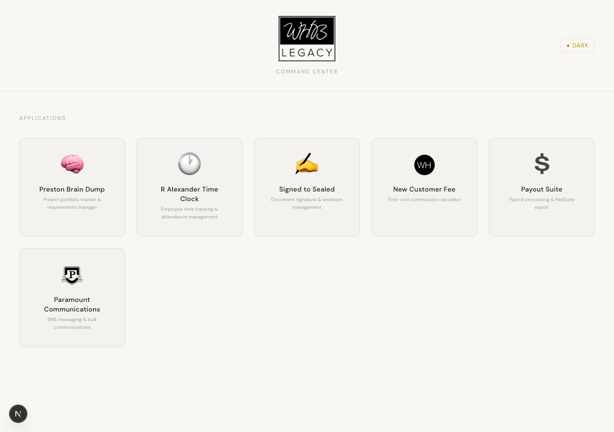
Accessing the Admin Panel
- From the Time Clock screen, click the Admin button in the top-right corner.
- Enter the admin password when prompted.
- You will be taken to the admin panel with 9 management tabs.
Note: The contractor-facing clock is designed for shared tablet use and requires no authentication. The admin panel is password-protected and intended for supervisors only.
2. Clocking In
Clocking in is a 4-step process: enter your PIN, confirm your identity, select your job, and tap Clock In.
Step 1: Enter Your Resource Number
Use the on-screen numeric keypad to enter your 4-digit resource number. Your number is assigned when you are added to the system by an administrator.
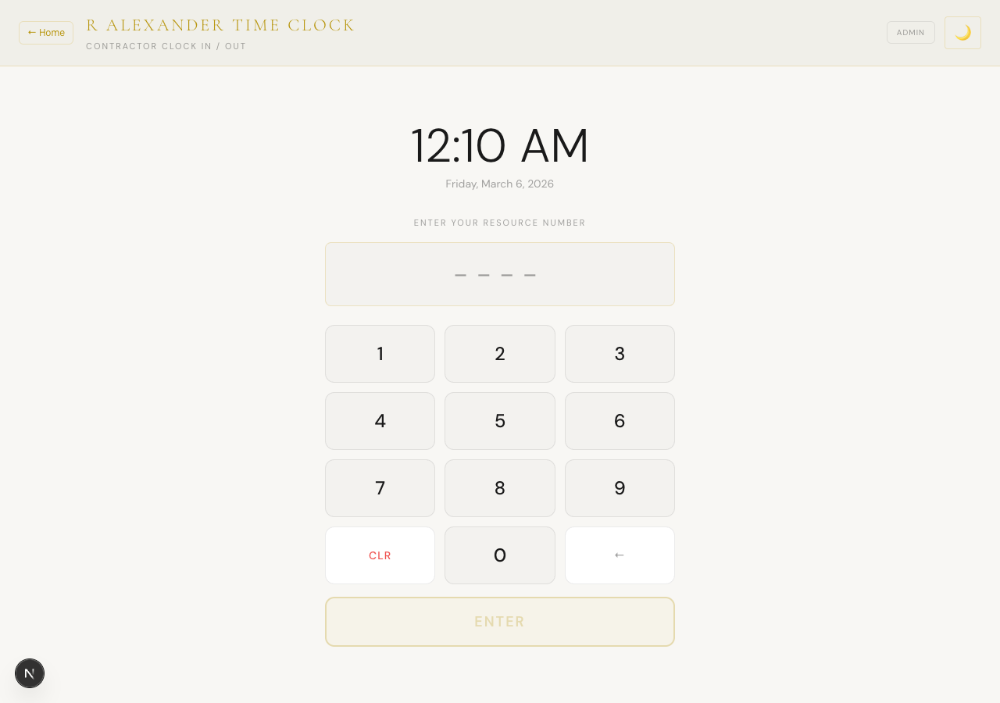
Keypad Controls
- Number keys (0–9) — Enter digits of your resource number
- CLR (red) — Clear the entire entry and start over
- ← — Delete the last digit entered
- ENTER (gold) — Submit your number (enabled after 4 digits are entered)
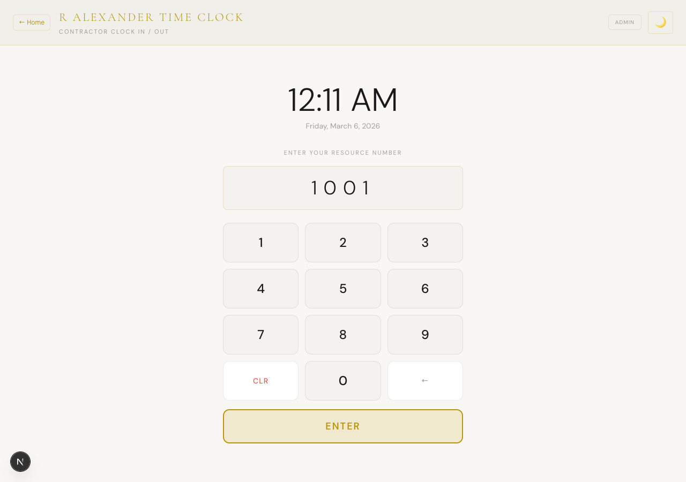
Step 2: Confirm Your Identity
After entering your number, the system displays your name, company, and resource number. Verify this is correct.
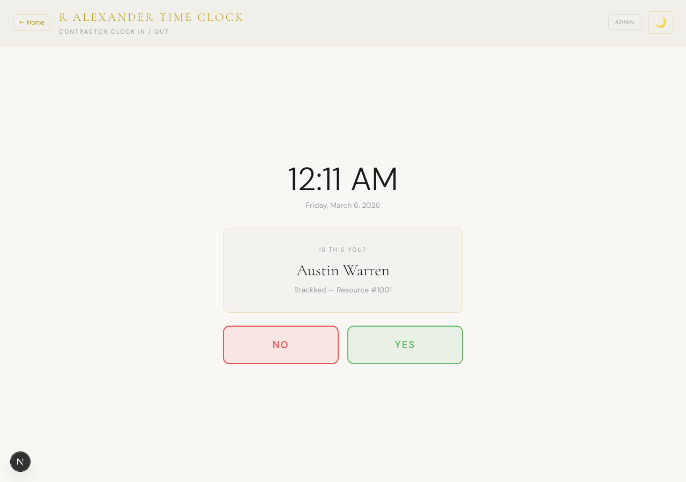
- Tap Yes if the name shown is yours
- Tap No to go back and re-enter your number
Step 3: Select Your Job
Choose the job you are working on today. Only jobs assigned to your company are shown.
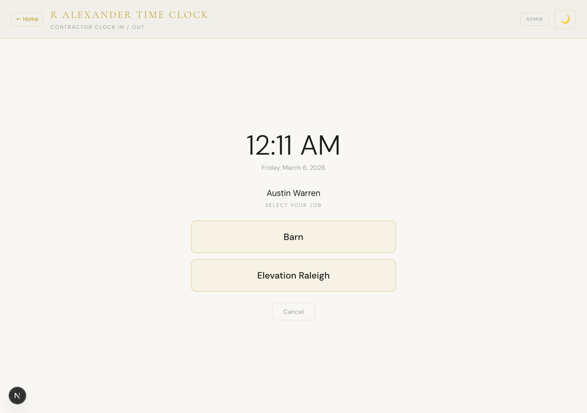
Step 4: Clock In
After selecting a job, tap the large green CLOCK IN button to begin your shift.
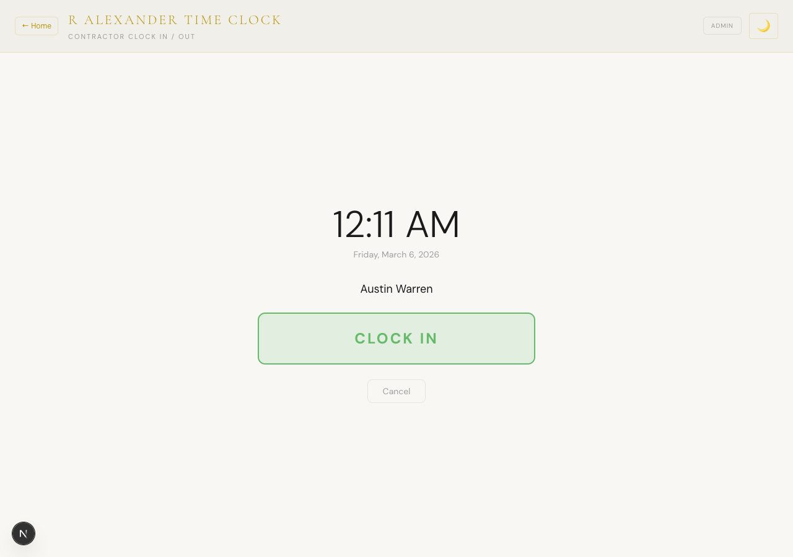
A green success message confirms you are clocked in, including the job name. The screen automatically resets after 4 seconds.
Tip: If no jobs are configured for your company, you will see a "Continue without job" option. Contact your admin to have jobs set up.
3. Clocking Out
When you are done for the day, clock out using the same resource number entry process.
Clock Out Process
- Enter your 4-digit resource number on the keypad and press Enter.
- Confirm your identity by tapping Yes.
- The system detects you are already clocked in and shows your current session details:
- Clock-in time (e.g., "12:11 AM")
- Elapsed time (e.g., "0h 15m")
- Current job name displayed in gold
- Tap the large red CLOCK OUT button.
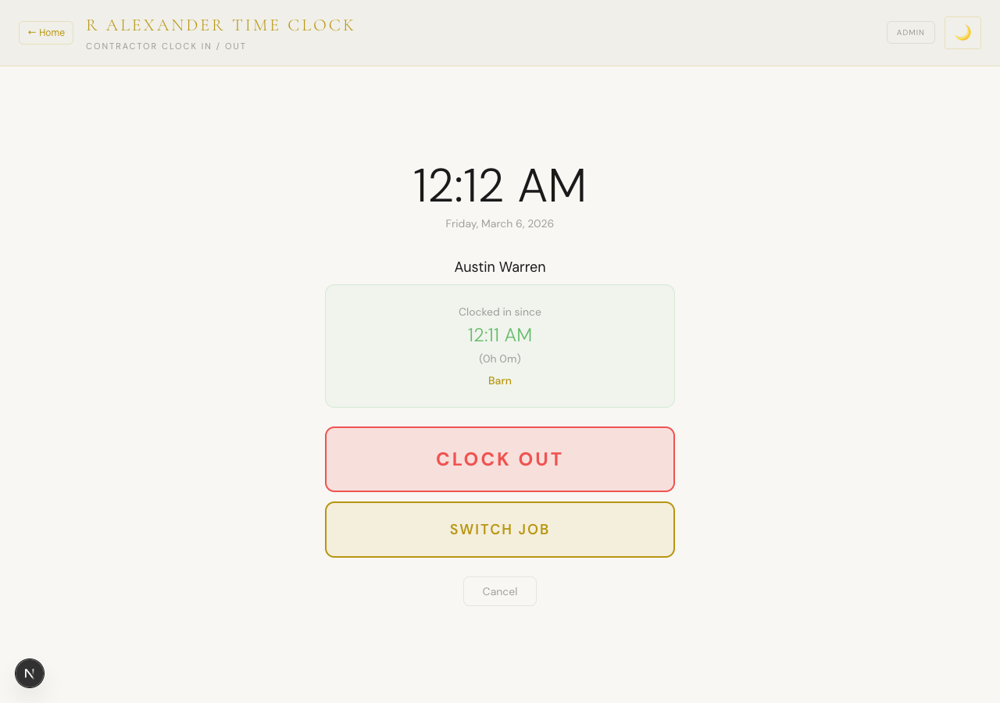
A green success message shows your total hours worked. The screen resets after 4 seconds.
Auto-Reset: If no action is taken within 30 seconds, the screen automatically returns to the keypad entry. This prevents the next worker from seeing your information.
4. Switching Jobs
If you need to move to a different job site during the day, use the Switch Job feature. This automatically clocks you out of your current job and clocks you into the new one in a single action.
When to Use Switch Job
- You are already clocked in to one job and need to move to another
- You want to keep an accurate record of hours per job site
- This can be repeated as many times as needed throughout the day
How to Switch Jobs
- Enter your resource number and confirm your identity (same as clocking out).
- On the action screen, tap the gold SWITCH JOB button instead of Clock Out.
- The system shows available jobs with the header "Switch to which job?" — your current job is automatically excluded from the list.
- Tap the new job you are switching to.
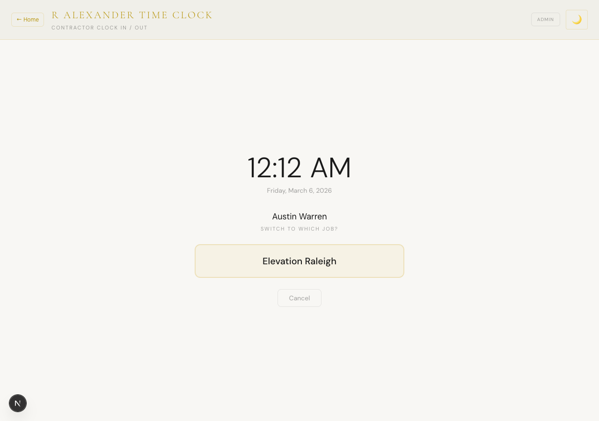
What Happens Behind the Scenes
- The system clocks you out of your current job at the current time
- The system immediately clocks you into the new job at the same time
- This creates a clean pair of entries in the daily log — one closed, one new
- A success message confirms: "Switched from [old job] to [new job]!"
Note: The Switch Job button only appears when your company has more than one active job. If only one job exists, you will only see the Clock Out button.
Example: A Typical Multi-Job Day
| Time |
Action |
Job |
| 7:00 AM |
Clock In |
Barn |
| 10:30 AM |
Switch Job |
Barn → Elevation Raleigh |
| 1:00 PM |
Switch Job |
Elevation Raleigh → Barn |
| 5:00 PM |
Clock Out |
Barn |
This creates 3 time entries: Barn (7:00–10:30), Elevation Raleigh (10:30–1:00), Barn (1:00–5:00).
5. Admin: Companies & Contractors
The admin panel is organized into 9 tabs. Companies and Contractors are the foundation — set these up first before adding jobs or processing time entries.
Companies Tab
Companies are the top-level organizational unit. Each contractor and job belongs to a company.
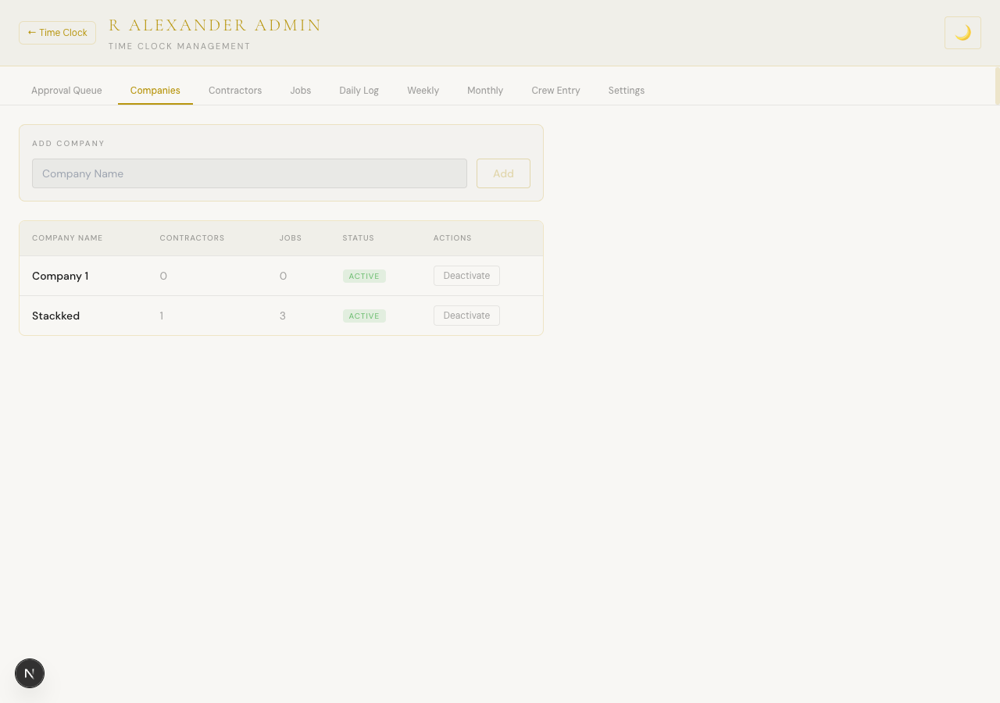
Adding a Company
- Navigate to the Companies tab.
- Type the company name in the "Company Name" field.
- Click Add or press Enter.
Company Table Columns
- Company Name — The organization name
- Contractors — Number of workers assigned to this company
- Jobs — Number of job sites assigned to this company
- Status — Active (green) or Inactive (gray)
- Actions — Activate or Deactivate the company
Contractors Tab
Contractors are the workers who clock in and out. Each contractor gets a unique, auto-generated 4-digit resource number.
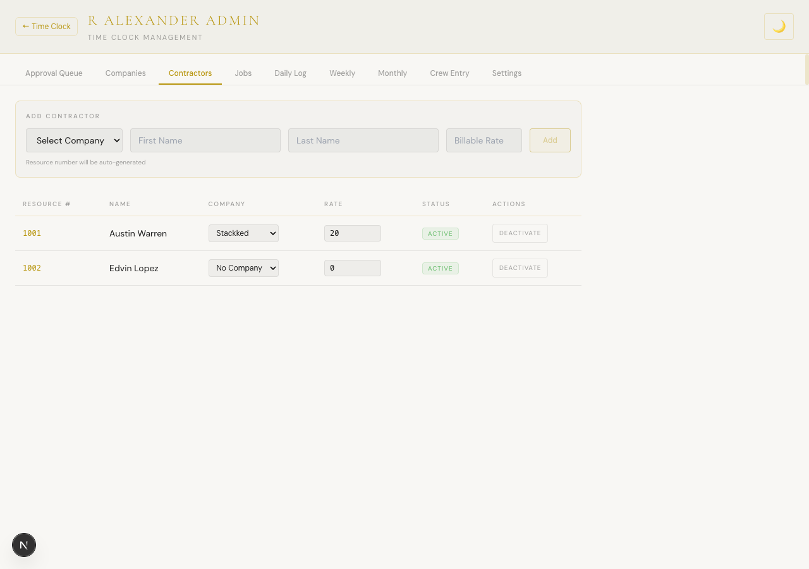
Adding a Contractor
- Navigate to the Contractors tab.
- Select the contractor's Company from the dropdown.
- Enter their First Name and Last Name.
- Enter their Billable Rate (hourly rate for invoicing).
- Click Add. A resource number is auto-generated (starting from 1001).
Contractor Table Features
- Resource # — The 4-digit PIN used to clock in (displayed in gold)
- Company — Editable inline via dropdown — reassign a contractor to a different company at any time
- Rate — Editable inline — update the billable rate directly in the table
- Status — Active contractors can clock in; inactive contractors cannot
- Deactivate/Activate — Toggle contractor availability without deleting their records
Important: Deactivating a contractor prevents them from clocking in, but preserves all their historical time entries for reporting purposes. Only deactivate — never delete.
6. Admin: Jobs
Jobs represent the specific projects or locations where contractors work. Each job is assigned to a company, and contractors only see jobs for their own company when clocking in.
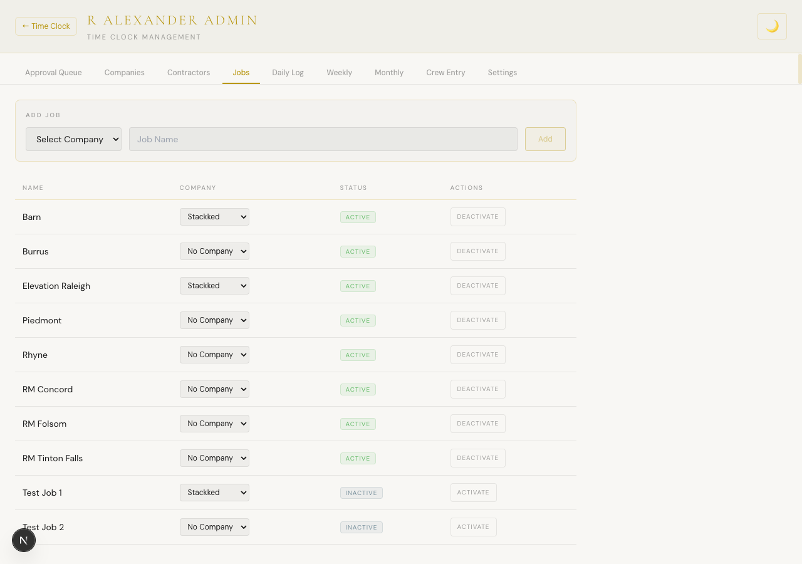
Adding a Job
- Navigate to the Jobs tab.
- Select the Company this job belongs to.
- Enter the Job Name (e.g., "Barn", "Elevation Raleigh").
- Click Add or press Enter.
Job Table Features
- Name — The job/site name shown to contractors during clock-in
- Company — Editable inline via dropdown — reassign a job to a different company
- Status — Active jobs appear in the clock-in job list; inactive jobs are hidden
- Deactivate/Activate — Hide completed jobs without losing historical data
Best Practice: When a project is finished, deactivate the job rather than deleting it. This keeps all associated time entries intact for historical reporting while removing it from the active job list.
How Jobs Affect the Clock-In Flow
- Only active jobs assigned to the contractor's company appear during clock-in
- If a company has zero active jobs, the contractor sees a "Continue without job" fallback
- If a company has only one job, the Switch Job button will not appear (since there's nothing to switch to)
- If a company has two or more active jobs, contractors see both Clock Out and Switch Job options
7. Admin: Approval Queue
All time entries start with a "Pending" status. The Approval Queue is where administrators review and approve entries before they go to payroll.
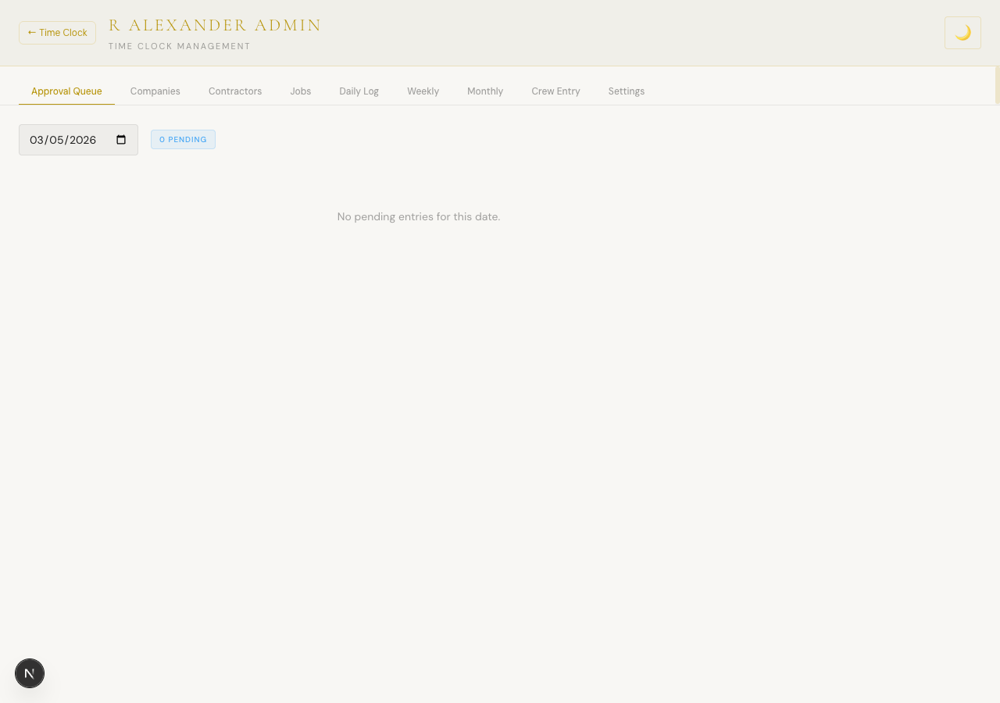
Using the Approval Queue
- Navigate to the Approval Queue tab (this is the default tab when opening Admin).
- Select a date using the date picker. The queue defaults to yesterday's date.
- Pending entries are grouped by company with a count badge showing how many need review.
- For each entry, review the contractor name, job, clock-in/out times, hours, and billable amount.
- Take action:
- Approve — Mark the entry as approved for payroll
- Flag — Flag the entry for review with a required reason note
- Approve All — Bulk-approve all entries for a company group at once
Entry Information Shown
| Column |
Description |
| Resource # |
Contractor's 4-digit identifier |
| Name |
Contractor's full name |
| Job |
Job site for this entry |
| Clock In / Out |
Start and end times; "Active" shown if still clocked in |
| Hours |
Calculated hours to 2 decimal places |
| Billable |
Hours × contractor's billable rate |
Approval Statuses
| Status |
Color |
Meaning |
| Pending |
Blue |
New entry awaiting review |
| Approved |
Green |
Verified and ready for payroll |
| Flagged |
Amber |
Requires attention; includes a flag note |
Flagging an Entry: When you click Flag, a modal appears requiring you to enter a reason. This note is stored with the entry and visible in the flagged entries section below the main queue.
8. Admin: Daily Log & Reports
Three reporting views provide visibility into contractor hours at different time scales. All reports support company filtering and CSV export.
Daily Log
Shows all time entries for a specific date with full detail.
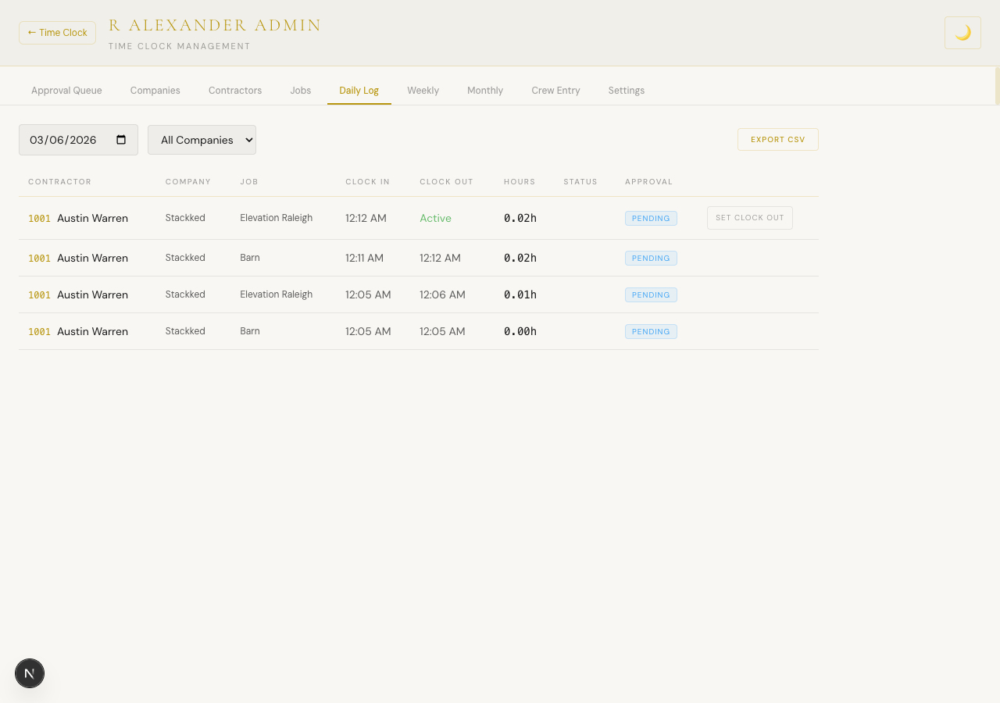
Daily Log Features
- Date Picker — Select any date to view entries for that day
- Company Filter — Filter entries by a specific company or view all
- Export CSV — Download the current view as a CSV file
- Stale Detection — Entries open for more than 12 hours show a red "Stale (>12h)" badge
- Set Clock Out — For active or stale entries, manually set a clock-out time
- Approval Status — Color-coded badges (Pending / Approved / Flagged)
Weekly Report
Shows hours per contractor broken down by day of the week (Mon–Sun), with weekly totals.
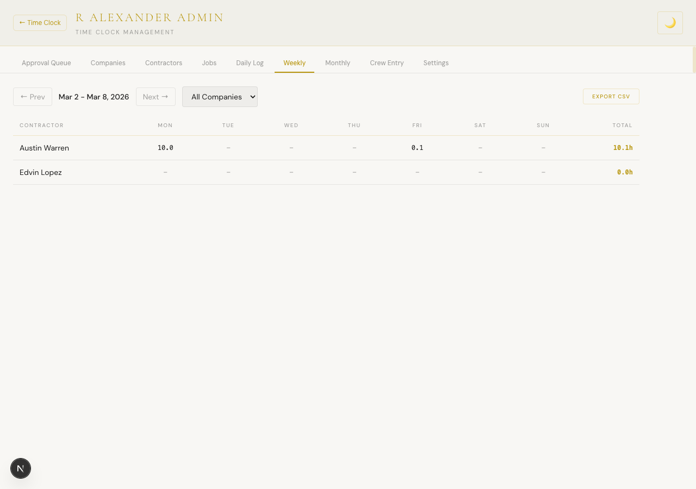
Weekly Report Features
- Week Navigation — Use ← Prev and Next → to move between weeks
- Week Range Label — Shows the current week dates (e.g., "Mar 2 - Mar 8, 2026")
- Company Filter — Filter by company
- Daily Hours — Columns for Mon through Sun showing hours worked per day
- Weekly Total — Gold-colored total column on the right
- Export CSV — Download the weekly summary
Monthly Report
Shows hours per contractor broken down by week number within the month, with monthly totals. Accessed via the Monthly tab. Features the same company filter and CSV export.
CSV Exports: All three reports (Daily, Weekly, Monthly) support one-click CSV export. The exported file includes all currently visible data after any company filter is applied. Use these exports for payroll processing, invoicing, or record-keeping.
9. Admin: Crew Entry
The Crew Entry tool allows administrators to batch-create time entries for multiple workers at once — ideal for crews that all worked the same job and hours on a given day.
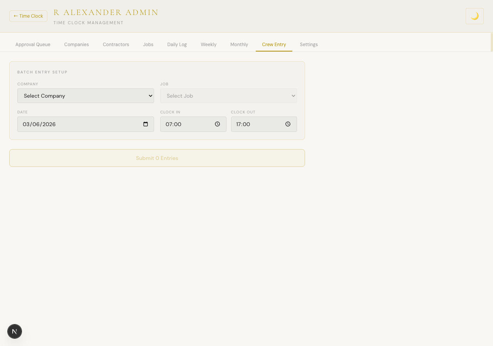
Using Crew Entry
- Navigate to the Crew Entry tab.
- Select the Company for the crew.
- Select the Job they worked on (filtered by the selected company).
- Set the Date (defaults to today).
- Set the Clock In and Clock Out times (defaults to 7:00 AM – 5:00 PM).
- A list of active contractors for the selected company appears below.
- Check the boxes for each crew member who worked, or click Select All / Deselect All.
- Click Submit X Entries to create all time entries at once.
Crew Entry Details
- All created entries use the same job, date, clock-in, and clock-out times
- Entries are created with "Pending" approval status — they still need to be approved in the Approval Queue
- Selected crew members are highlighted with a gold border
- The Submit button shows the count of entries that will be created
- A success message confirms how many entries were submitted
When to Use Crew Entry: This is ideal for situations where an entire crew worked the same shift — such as a full-day job where all workers arrived and left at the same time. For days where workers had different hours, use individual clock-in/out or manually adjust entries in the Daily Log.
10. Troubleshooting & FAQ
Common issues and their solutions.
"Resource number not found"
- Check the number — Ensure you entered the correct 4-digit resource number
- Check active status — The contractor may have been deactivated by an admin. Ask your supervisor to check the Contractors tab
- New contractor? — If you were just added, refresh the page to load the latest data
"Connecting..." Won't Go Away
- Check internet connection — The app requires a network connection to reach the database
- Try refreshing — If the connection indicator persists for more than 12 seconds, a "Retry" button will appear
- Older browsers — Ensure you are using a modern browser (Chrome, Safari, Firefox)
Worker Forgot to Clock Out
- The entry will appear as "Active" in the Daily Log
- After 12 hours, it will be marked as "Stale (>12h)"
- An admin can click "Set Clock Out" in the Daily Log to manually set the correct clock-out time
Switch Job Button Not Showing
- The Switch Job button only appears when the contractor's company has more than one active job
- Check the Jobs tab to ensure multiple jobs are assigned to the contractor's company and are set to Active
Frequently Asked Questions
Q: Can a contractor be assigned to multiple companies?
No, each contractor belongs to one company at a time. However, an admin can reassign a contractor to a different company via the inline dropdown on the Contractors tab.
Q: What happens if I switch jobs many times in one day?
Each switch creates a separate time entry. You can switch as many times as needed. All entries appear in the Daily Log and are counted in weekly/monthly totals.
Q: Can multiple people use the time clock at the same time?
The time clock is designed for sequential use on a shared device (one person at a time). However, the admin panel can be accessed simultaneously from any device.
Q: How do I export data for payroll?
Use the Export CSV button on any report tab (Daily, Weekly, or Monthly). Apply the company filter first if you only need data for one company. The CSV file downloads immediately.
Q: Is there an overtime calculation?
The system tracks total hours but does not automatically calculate overtime. Use the Weekly report to identify contractors exceeding 40 hours and calculate overtime during payroll processing.
Q: What does the billable rate do?
The billable rate is multiplied by hours worked to show a billable amount in the Approval Queue. This helps administrators estimate costs during the approval process.